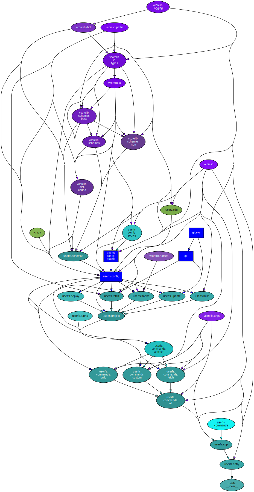

userfs (1.1.7)#


A system-bootstrapping automation and introspection tool.
Consider sponsoring development.
Python Version Support#
This package is tested with the following Python minor versions:
Platform Support#
This package is tested on the following platforms:
ubuntu-latestmacos-latestwindows-latest
Introduction#
Command-line Options#
$ ./venv3.14/bin/ufs -h
usage: ufs [-h] [--version] [-v] [-q] [--curses] [--no-uvloop] [-C DIR]
{build,custom,fetch,noop} ...
A system-bootstrapping automation and introspection tool.
options:
-h, --help show this help message and exit
--version show program's version number and exit
-v, --verbose set to increase logging verbosity
-q, --quiet set to reduce output
--curses whether or not to use curses.wrapper when starting
--no-uvloop whether or not to disable uvloop as event loop driver
-C, --dir DIR execute from a specific directory
commands:
{build,custom,fetch,noop}
set of available commands
build attempt to build a software project from its sources
custom perform a custom interaction, sourced from external
hooks
fetch attempt to obtain some software from the internet
noop command stub (does nothing)
Sub-command Options#
build#
$ ./venv3.14/bin/ufs build -h
usage: ufs build [-h] [-c CONFIG] [-a] [-n] [-p PATTERN] [-d] [projects ...]
positional arguments:
projects specific projects to build, arguments in the form
'key=value' will be provided as interaction options
options:
-h, --help show this help message and exit
-c, --config CONFIG an optional path to the configuration directory
-a, --all interact with all configured projects
-n, --no-interact don't run package-implemented interactions
-p, --pattern PATTERN
a pattern to use to select project specifications
filtered by name
-d, --deploy whether or not to also attempt to deploy or install
the built project assets
custom#
$ ./venv3.14/bin/ufs custom -h
usage: ufs custom [-h] [-c CONFIG] [-a] [-n] [-p PATTERN] [projects ...]
positional arguments:
projects specific projects to build, arguments in the form
'key=value' will be provided as interaction options
options:
-h, --help show this help message and exit
-c, --config CONFIG an optional path to the configuration directory
-a, --all interact with all configured projects
-n, --no-interact don't run package-implemented interactions
-p, --pattern PATTERN
a pattern to use to select project specifications
filtered by name
fetch#
$ ./venv3.14/bin/ufs fetch -h
usage: ufs fetch [-h] [-c CONFIG] [-a] [-n] [-p PATTERN] [-u] [projects ...]
positional arguments:
projects specific projects to build, arguments in the form
'key=value' will be provided as interaction options
options:
-h, --help show this help message and exit
-c, --config CONFIG an optional path to the configuration directory
-a, --all interact with all configured projects
-n, --no-interact don't run package-implemented interactions
-p, --pattern PATTERN
a pattern to use to select project specifications
filtered by name
-u, --update whether or not to also attempt to update project
sources
Internal Dependency Graph#
A coarse view of the internal structure and scale of
userfs’s source.
Generated using pydeps (via
mk python-deps).

Interface Documentation
- userfs package